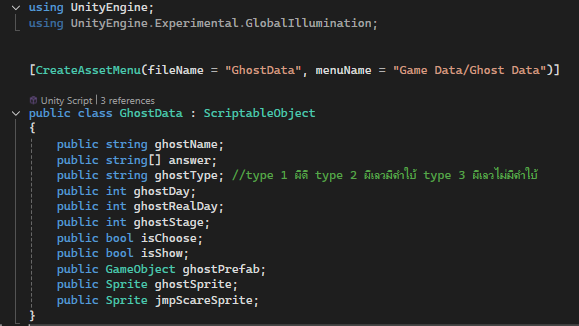
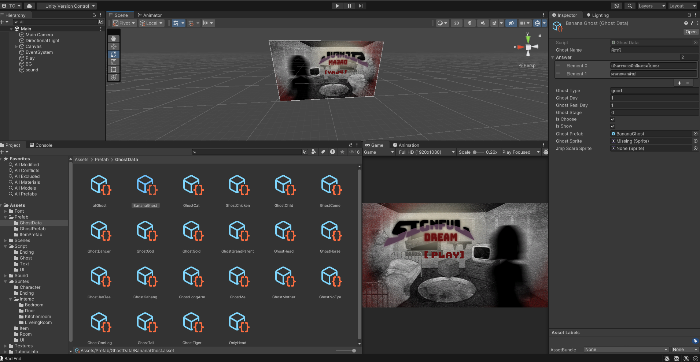
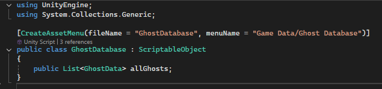
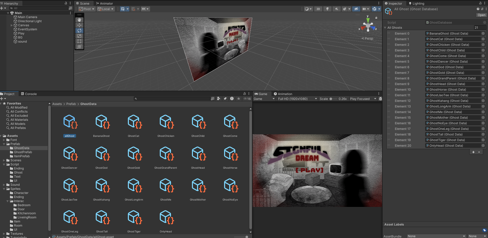
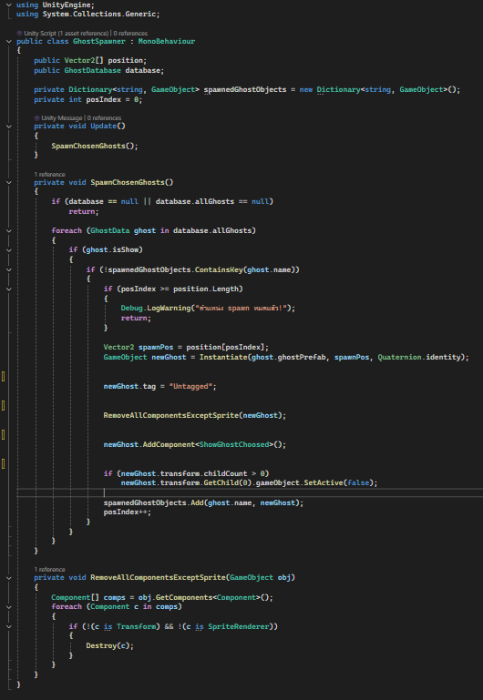
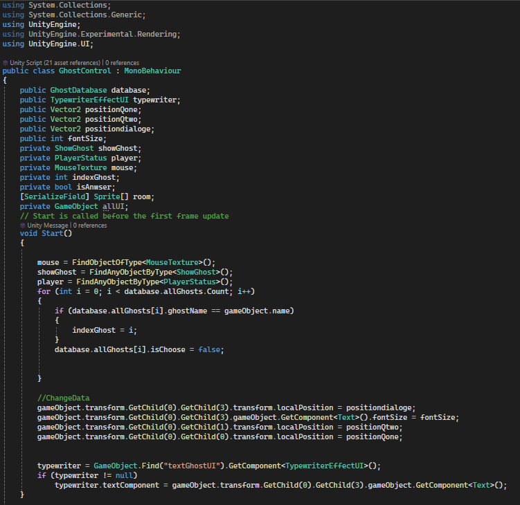
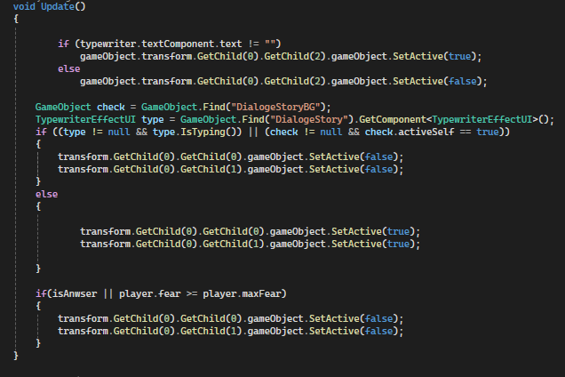
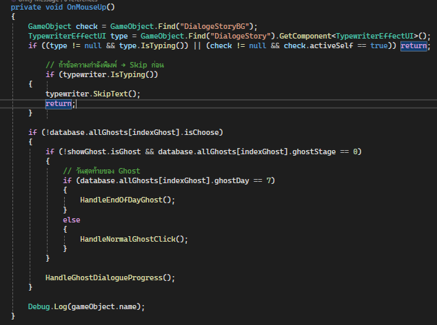
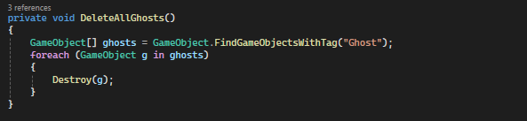
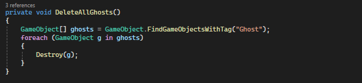

Signful Dream
Bit Egg Game Jam 2025
Made with Unity (2022.3.62f2)
Dev by: Pacharapon Ketkaew , Teerapuwanai Chanachaisombud
Art by : Chadapak Thanaphopmongkhon , Wasita Nuansri
signful-dream Game Machanic


Game Play
Features
GhostData class
The GhostData class implements a Data-Driven Design using Unity's ScriptableObject. This approach decouples ghost attributes and visual assets from the core game logic, allowing for rapid content creation and balancing without code modifications. By centralizing essential data—such as dialogue answers, progression stages, and asset references—the system ensures high scalability and memory efficiency for the game's entity architecture.

Ghost Data
Example of creating GhostData using ScriptableObjects for efficient data management

GhostDatabase class
The GhostDatabase class serves as a centralized repository for all ghost assets within the game. By utilizing a ScriptableObject-based List, I established a 'Single Source of Truth' that allows for efficient data management and seamless access across various game systems, ensuring the architecture remains organized as the game's content scales.


GhostSpawner class
The GhostSpawner class serves as the core execution layer bridging the GhostDatabase with the game world. It utilizes a Dictionary-based system to efficiently track and manage object creation and prevent duplicates, while incorporating Runtime Optimization to strip unnecessary components for flexible asset reuse—all operating directly through a ScriptableObject-driven approach.

GhostControl class
The GhostControl class serves as the core Interaction State Machine for ghostly entities within the game. It acts as a bridge between the back-end data (ScriptableObjects/Databases) and the front-end presentation, handling complex gameplay consequences based on player choices.
  
 
